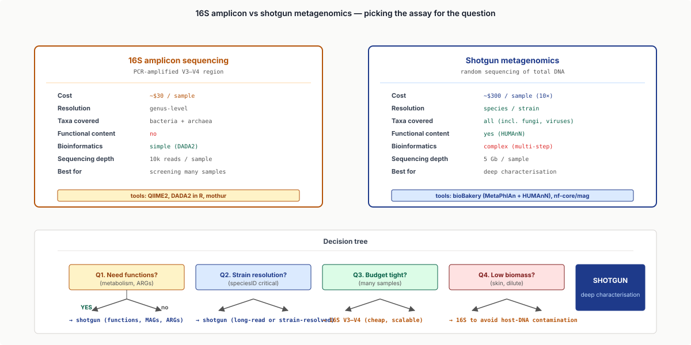
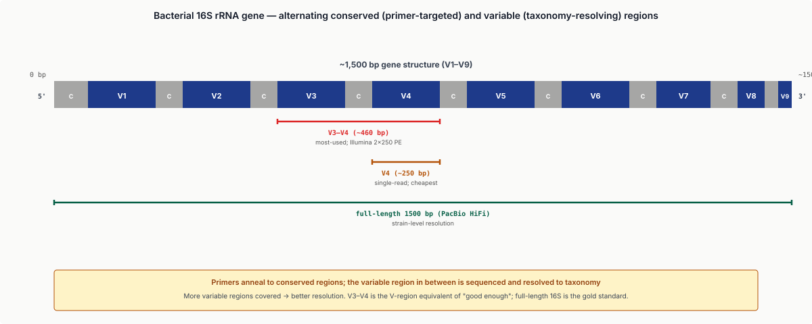
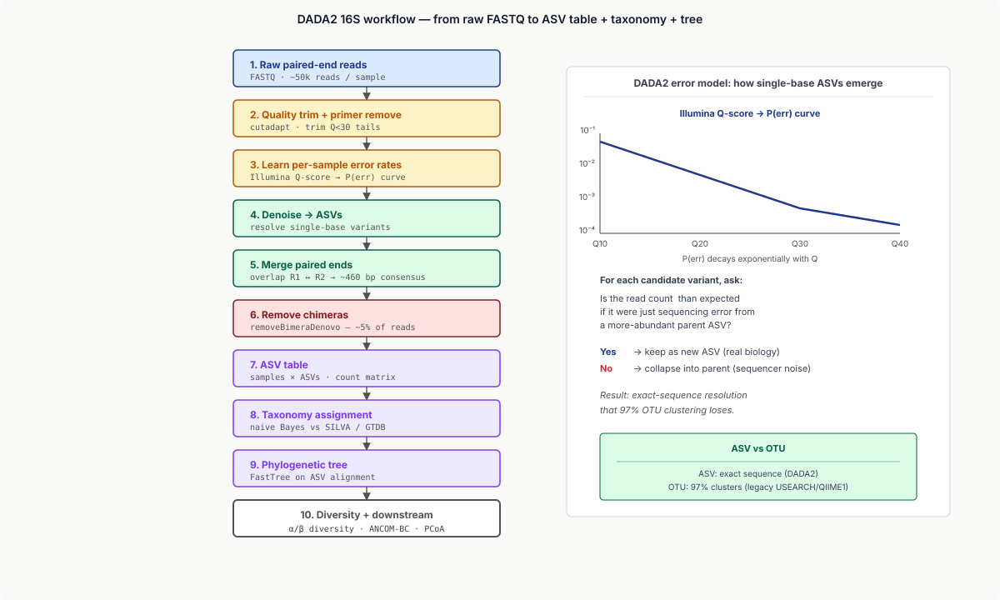
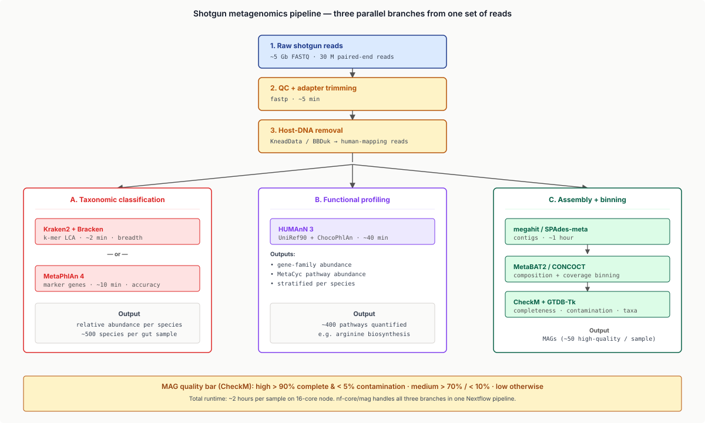
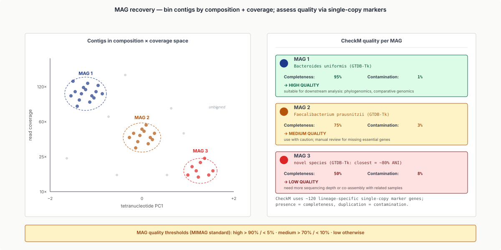
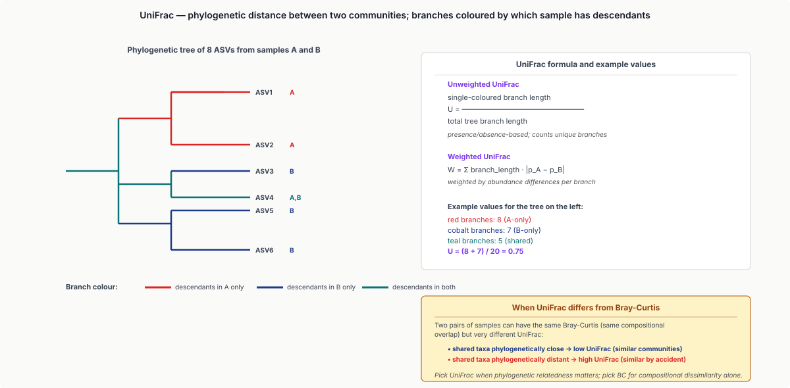
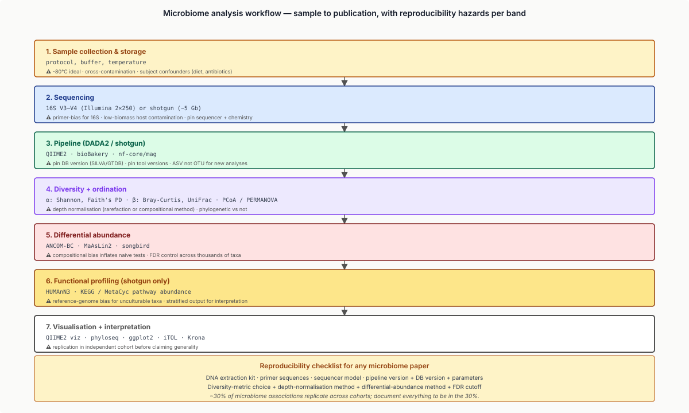
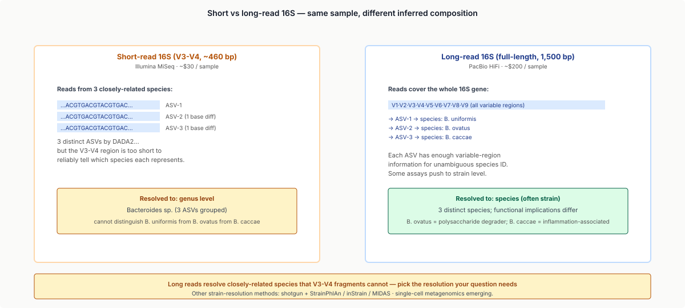

Five moves: pick the assay, denoise to ASVs or k-mer-classify reads, measure diversity, test under compositional constraint, connect to the host.
Learning objectives
- Distinguish 16S rRNA amplicon sequencing from shotgun metagenomics; describe the data each produces and when each is appropriate.
- Run a 16S workflow with DADA2 / QIIME2: from FASTQ → ASVs (amplicon sequence variants) → taxonomy → diversity statistics.
- Run a shotgun metagenomics workflow: read QC → taxonomic classification (Kraken2, MetaPhlAn) → functional profiling (HUMAnN) → MAG recovery.
- Compute and interpret alpha diversity (within-sample) and beta diversity (between-sample) metrics; explain Shannon, Simpson, Bray-Curtis, UniFrac as information-theoretic / phylogenetic measures.
- Apply differential-abundance testing (ANCOM-BC, MaAsLin2, songbird) with appropriate compositional data corrections.
- Describe the major host-microbiome connections: gut microbiome and IBD, immunotherapy response, metabolomics, oral microbiome and cancer.
- Frame metagenomics as detection-and-classification under compositional constraint: amplicon analysis as fingerprint-matched filter, taxonomic classification as approximate-nearest-neighbour search, diversity as information-theoretic divergence.
Part 1 · 25 min Why Microbes
1.1 The microbial scale
The human body harbours ~10¹³ microbial cells (about as many as human cells), encoding ~3 million microbial genes (vs ~25,000 human genes). 99% of these microbes are bacteria; the rest are archaea, fungi, viruses, and protozoans.
Most microbiome research focuses on:
- Gut — largest community (~10¹⁴ cells/g feces), most clinical impact.
- Oral — second-largest, links to cardiovascular and pancreatic cancer.
- Skin — niche-specific (sebaceous, moist, dry).
- Vaginal — dominated by Lactobacillus; clinical relevance for preterm birth.
- Respiratory — small but important in asthma and COPD.
1.2 What we want to know
Three core questions:
- Who's there? — taxonomic composition (which species, at what abundance).
- What can they do? — functional potential (which metabolic pathways, virulence factors, antibiotic resistance).
- What does that mean for the host? — phenotype association (disease, drug response, diet effect).
Each maps to a different sequencing strategy + analysis pipeline.
1.3 The two main assays
16S rRNA amplicon sequencing:
- PCR-amplify a hypervariable region of the bacterial 16S rRNA gene (V3–V4 typical).
- Sequence the amplicon (~250 bp paired-end Illumina, ~$30/sample).
- Cluster reads to taxonomic units (ASVs); assign taxonomy via reference DB (SILVA, GTDB, Greengenes).
- Advantages: cheap, well-validated.
- Limitations: bacteria only (not archaea/fungi/viruses); genus-level resolution typically; primer biases.
Shotgun metagenomics:
- Random sequencing of all DNA in the sample (~5 Gb/sample, ~$300).
- No PCR amplification of marker genes.
- Direct taxonomic classification of reads (Kraken2, MetaPhlAn) + functional profiling (HUMAnN).
- Advantages: species- to strain-level resolution; covers all kingdoms; functional content; viable for MAG assembly.
- Limitations: 10× cost; bioinformatics-heavy; host-DNA contamination in low-biomass samples.
A common hybrid: 16S for screening hundreds of samples, shotgun on a selected subset for deep characterisation.

1.4 The microbial population analogy
Treat a microbiome like a population:
- Allele frequency ↔ taxon relative abundance.
- Effective population size ↔ community richness.
- Drift ↔ stochastic abundance fluctuations.
- Selection ↔ host or environmental selection (diet, antibiotics).
- Migration ↔ external inoculation (FMT, diet, contact).
Population-genetics metrics ($F_{\text{st}}$, Nei's distance) generalise to microbial-community comparison via UniFrac and Bray-Curtis.
1.5 The deep dive
Part 2 · 40 min 16S Amplicon Workflow
2.1 The 16S rRNA gene
Bacterial 16S rRNA is a ~1500 bp ribosomal-RNA gene with alternating conserved and variable regions (V1 through V9). PCR primers anneal to conserved regions; the variable region between is amplified.
V3–V4 (~460 bp) is the most-used region — long enough for genus-level resolution, fits Illumina 2×250 bp paired-end.

2.2 The DADA2 pipeline
DADA2 (Callahan et al. 2016) is the modern 16S workflow:
- Quality-filter and trim reads.
- Learn error rates — model per-sample sequencing error using the Illumina error profile.
- Denoise — cluster reads into Amplicon Sequence Variants (ASVs): exact sequences distinguishable from sequencing error. ASVs replace OTUs (Operational Taxonomic Units), which clustered at 97% identity.
- Merge paired-end reads.
- Remove chimeras (PCR artefacts that combine two parent sequences).
- Assign taxonomy via naive Bayes classifier against SILVA/GTDB/Greengenes.
ASVs are exact sequences, not 97%-clusters — DADA2 resolves single-base differences that legacy OTU methods missed.

2.3 QIIME2
QIIME2 is the dominant umbrella platform: end-to-end pipeline with DADA2 as the default denoiser, plus diversity, differential-abundance, and visualisation modules. Integrates with the Galaxy web interface for non-bioinformaticians.
2.4 Reference databases
- SILVA — most comprehensive, regularly updated.
- GTDB — phylogenetically-coherent taxonomy (no paraphyletic groups).
- Greengenes 13_8 — legacy default, frozen at 2013.
For new analyses use SILVA (default) or GTDB (for phylogenetic rigour).
2.5 Outputs and downstream analysis
DADA2/QIIME2 produces:
- ASV table: rows = samples, columns = ASVs, cells = read counts.
- Taxonomy table: ASV → kingdom/phylum/class/order/family/genus/species assignment.
- Phylogenetic tree of ASVs (built via FastTree).
- Sample metadata linkage.
This is the equivalent of a count matrix + annotation in scRNA-seq — the same downstream tools (PCA, clustering, differential abundance) apply with appropriate statistical adjustments.
2.6 The 2024 frontier
- Long-read 16S: full-length 16S via PacBio HiFi gives strain-level resolution (vs genus-level from short-read V3–V4).
- Multi-region 16S: V1V9 amplicons covering all variable regions improve taxonomic resolution.
- DADA2 + AlphaFold-derived priors: emerging, marginal improvement.
Part 3 · 40 min Shotgun Metagenomics
3.1 The shotgun design
Shotgun metagenomics: extract total DNA, fragment it, sequence randomly. No PCR step. Reads come from any organism in the sample, plus host contamination if present.
Workflow:
- Read QC (fastp, BBDuk).
- Host-DNA removal (map to human reference, discard mappers).
- Taxonomic classification.
- Functional profiling.
- Optional: MAG assembly.

90%, contamination < 5%).">3.2 Taxonomic classification: Kraken2
Kraken2 (Wood, Lu, Langmead 2019) is a k-mer-based exact classifier:
- Build a database of k-mers (k = 35 default) from all reference genomes (NCBI RefSeq + GenBank).
- For each read, find all matching k-mers in the database.
- Assign read to the lowest common ancestor (LCA) of all matched k-mers' taxonomic origins.
- Run time: ~minutes per sample on a typical compute node.
Bracken post-processing converts Kraken2 read counts to Bayesian-corrected abundance estimates.
3.3 Taxonomic classification: MetaPhlAn
MetaPhlAn (Beghini et al. 2021) is a marker-gene-based classifier:
- Pre-computed database of clade-specific marker genes (~5 markers per species).
- Reads aligned (Bowtie2) to markers; relative abundance inferred from marker coverage.
- More accurate than Kraken2 at species level for well-characterised organisms.
- Slower (Bowtie2 alignment) but more interpretable.
Typical workflow: Kraken2 for breadth (catch everything), MetaPhlAn for clinical-grade species calls.
3.4 Functional profiling: HUMAnN
HUMAnN (HMP Unified Metabolic Analysis Network, Franzosa 2018) maps reads to UniRef90 + ChocoPhlAn (per-species pangenome) → quantifies pathway abundance.
Output:
- Per-species, per-gene-family abundances.
- Pathway-level abundances (MetaCyc).
- Stratified output: each pathway abundance broken down by contributing species.
This is the functional analog of expression analysis — instead of "which genes are expressed?", it's "which microbial functions are present?"
3.5 MAG recovery
A Metagenome-Assembled Genome (MAG) is a near-complete bacterial genome assembled directly from metagenomic reads — no isolation required.
Pipeline:
- Assemble reads (megahit, SPAdes-meta).
- Binning: cluster contigs by composition (k-mer spectra) + coverage (depth across samples) using MetaBAT2, MaxBin, CONCOCT.
- Quality assessment (CheckM): completeness + contamination.
- Taxonomy (GTDB-Tk).
A "high-quality MAG" has > 90% completeness and < 5% contamination. The Genomes from Earth's Microbiomes (GEM) catalogue (Nayfach et al. 2021) contains ~50,000 MAGs from ~10,000 environmental samples.

Part 4 · 25 min Diversity Metrics
4.1 Alpha diversity
Alpha diversity = within-sample diversity. Three flavours:
- Richness: number of distinct taxa observed. Easy to compute, sensitive to sequencing depth.
- Shannon entropy: $H = -\sum_i p_i \log p_i$. Information-theoretic. Combines richness and evenness.
- Simpson's index: $1 - \sum_i p_i^2$. Probability that two reads from the sample are different taxa.
For statistical inference, normalise depth by rarefaction (subsample all samples to same depth) or use depth-adjusted metrics (Faith's PD).
4.2 Beta diversity
Beta diversity = between-sample diversity:
- Bray-Curtis dissimilarity: $\frac{\sum_i |a_i - b_i|}{\sum_i (a_i + b_i)}$. Compositional difference.
- Jaccard: presence/absence-based.
- UniFrac (unweighted / weighted): phylogenetic — accounts for tree distance between observed taxa.
Beta-diversity matrices feed PCoA / PCA visualisations and PERMANOVA hypothesis testing.


4.3 The compositional data problem
Critical: microbial abundances are relative, not absolute. The total DNA in a sample is normalised by sequencing depth. If species A doubles in absolute abundance but species B triples, A's relative abundance decreases even though A is "growing".
Compositional data analysis (CoDa):
- Aitchison transforms (ALR, CLR, ILR).
- Constraint: components sum to a constant.
- Many "differential abundance" results in the early literature were artefacts of compositional bias.
Modern tools (ANCOM-BC, songbird) explicitly account for compositionality.
![Two side-by-side scenarios. Scenario 1 (true growth): species A doubles in absolute count from 100 to 200; species B stays at 100. Scenario 2 (technical artefact): both species' absolute counts unchanged at 100 each, but sequencing depth halved for sample 2 making A appear at 50 and B at 50. Both produce the same relative-abundance pattern (A:B ratio shifts from 1:1 toward 2:1). Annotation: 'Relative abundance can change without absolute change. Compositional analysis (Aitchison transforms, ANCOM-BC) handles this; naive t-tests do not.'](../diagrams/lecture-23/08-compositional.svg)
4.4 Differential abundance: ANCOM-BC
ANCOM-BC (Lin & Peddada 2020) is a differential-abundance test under compositional constraint:
- Models log-transformed abundances with sample-specific bias.
- Multiple-testing-corrected via Benjamini-Hochberg.
- Recommended over t-test, DESeq2, edgeR for microbiome data.
Part 5 · 30 min Host-Microbiome Connections
5.1 Gut microbiome and IBD
Inflammatory Bowel Disease (Crohn's, ulcerative colitis) shows reproducible gut-microbiome signatures:
- Reduced diversity (Shannon ~1.5 lower than healthy).
- Loss of obligate anaerobes (e.g., Faecalibacterium prausnitzii).
- Increase of pathobionts (Escherichia, Klebsiella).
Diagnostic biomarker development is active; the MetaCardis and iHMP-IBD consortia have produced ~5,000-sample datasets that enable machine-learning classifiers (~85% accuracy IBD vs control).
5.2 Immunotherapy response
Cancer-immunotherapy response (anti-PD-1) correlates with gut microbiome composition. Key findings:
- Akkermansia muciniphila abundance predicts response in multiple solid tumours (Routy et al. 2018).
- Bacteroides fragilis enrichment in non-responders.
- Antibiotics shortly before checkpoint blockade reduce response rate.
Several Phase I/II trials are testing fecal microbiota transplantation (FMT) as adjuvant to immunotherapy. ~10 small studies show response improvement in previously refractory patients.
![Three-panel case study (immunotherapy response). Panel 1: PCoA of pre-treatment microbiomes; responders (red) and non-responders (grey) cluster differently. Panel 2: Differential abundance of Akkermansia muciniphila — significantly higher in responders, shown as a volcano plot. Panel 3: Kaplan-Meier survival curves split by A. muciniphila abundance — high vs low; high abundance has substantially better survival. Bottom annotation: 'Routy et al. 2018 — gut microbiome predicts anti-PD-1 response in NSCLC + RCC patients.'](../diagrams/lecture-23/05-microbiome-disease.svg)
5.3 Other clinical connections
- Oral microbiome → pancreatic cancer: Porphyromonas gingivalis abundance is elevated in PDAC patients.
- Colorectal cancer: Fusobacterium nucleatum enrichment in tumour tissue (Castellarin 2012).
- Type 2 diabetes: gut microbiome shifts predict response to metformin.
- Drug metabolism: bacterial enzymes activate / deactivate ~30% of orally-administered drugs (Spanogiannopoulos 2016).
5.4 Cohort-scale population studies
Major resources:
- HMP / iHMP (Human Microbiome Project): 300 + 1,700 individuals, multi-site.
- MetaCardis: 2,000 individuals, cardiometabolic disease focus.
- TwinsUK Microbiome: heritability estimation.
- Fragile Microbiome Atlas: longitudinal sampling in pregnancy.
Statistical scale: ~200,000 microbiome samples publicly available.
5.5 The Hippocrates 2.0 question
Treating disease via microbiome modulation:
- Direct: FMT, probiotics, prebiotics.
- Indirect: dietary intervention, drug repurposing.
- Engineered: synthetic microbes (live biotherapeutics) currently in Phase II–III for C. difficile, IBD, allergy.
The 2030s answer to "what does the microbiome do" is "it's a manipulable disease-modifying organ".
Part 6 · 25 min Tools, Pitfalls, and Practice
6.1 The standard 2024 stack
For 16S workflows:
- QIIME2 (full pipeline) or DADA2 in R.
- Diversity + ordinations via QIIME2 or
phyloseq(R) orscikit-bio(Python). - Differential abundance: ANCOM-BC, MaAsLin2, songbird.
For shotgun:
- bioBakery 4 stack: KneadData (host removal) → MetaPhlAn4 → HUMAnN3.
- Or Sunbeam / nf-core/mag for Nextflow-based reproducible workflows.
- MAG recovery: nf-core/mag, Atlas, ATLAS.

6.2 Pitfalls
Sample collection:
- Storage temperature matters: -80°C ideal; lyophilisation acceptable.
- Stabilising buffers (RNAlater, OMNIgene) for ambient shipping.
- Cross-contamination from sample handling.
Sequencing:
- Low-biomass samples (skin, low-density gut) → high host-DNA contamination.
- PCR amplification bias for 16S — primers preferentially amplify some taxa.
- Sequencing depth: 16S requires 10k reads/sample; shotgun ideally 5 Gb/sample.
Bioinformatics:
- ASV vs OTU debate: ASVs are objectively better; legacy data uses OTUs.
- Reference DB updates change taxonomic assignments — pin DB versions.
- Compositional bias as discussed.
Statistical:
- Sample-size requirements: for typical effect sizes, 30+ per group.
- Multiple-testing across thousands of taxa requires FDR control.
- Subject-level confounders (age, diet, antibiotics) often dominate the signal.
6.3 Reproducibility
Microbiome reproducibility is famously poor (~30% of associations replicate across cohorts). Drivers:
- Cohort effects (geography, diet, ethnicity).
- Technical variation (DNA extraction, primer choice, sequencer).
- Statistical methodology (compositional vs non-compositional).
The Strain Resolved Microbiome Wiki and standardised pipeline efforts (cwl-microbiome) aim to improve reproducibility. Until 2030, expect signature replication around 50%.
6.4 The 2024 frontier
- Strain-level resolution: PacBio HiFi for full-length 16S; long-read shotgun.
- Multi-omics integration: 16S + metagenomics + metabolomics + host transcriptomics.
- Engineered microbiome: live biotherapeutic products entering clinical trials.
- Foundation models for microbiome: protein-language-model-style embeddings for microbial proteins (ESM-2 has microbial sub-sets).
Part 7 · 15 min Frontier Topics
7.1 Antibiotic resistance gene tracking
Shotgun metagenomics can map antibiotic resistance genes (ARGs) in clinical samples and environmental reservoirs. Tools: CARD-RGI, AMRFinderPlus. Critical for tracking resistance spread between species (horizontal gene transfer in real time).
7.2 Phylogenetic placement
For low-resolution amplicon data, phylogenetic placement (EPA-ng, pplacer) inserts queries into a reference tree without rebuilding it — useful for stable taxonomic comparison across studies.
7.3 Strain-level dynamics
Within-species strain variation matters: different E. coli strains range from commensal to pathogen. StrainPhlAn, MIDAS, inStrain infer strain composition from shotgun data.

7.4 Microbiome-host genetic interaction
GWAS for microbiome composition: microbiome-GWAS (mGWAS) identifies host genetic variants associated with microbial abundance. Examples: lactose-tolerance variants → Bifidobacterium; ABO blood group → Bacteroides abundance.
Wrap-up
What you should take away
- Two main assays: 16S (cheap, genus-level, bacteria-only); shotgun (expensive, species-strain-level, multi-kingdom).
- DADA2 + QIIME2 is the 16S standard; bioBakery + Kraken2/MetaPhlAn/HUMAnN is the shotgun standard.
- Diversity metrics generalise from population genetics: Shannon entropy = information-theoretic richness; UniFrac = phylogenetic distance; Bray-Curtis = compositional dissimilarity.
- Compositional bias is critical: relative abundances are constrained; modern differential-abundance tools (ANCOM-BC) account for this.
- Host-microbiome connections are real but small; replication rates ~50%; gut-immunotherapy-response is the most clinically validated.
- EE framings: metagenomics as community signal demixing; taxonomic classification as approximate-nearest-neighbour search; diversity as information-theoretic divergence.
Next lecture
GWAS + Mendelian randomisation. The microbiome population framework here connects to the host-genetics population framework there.
Homework
- Download a 16S amplicon dataset from MGnify or the SRA (any IBD or healthy-control cohort). Run DADA2; report ASV count, taxonomic assignments, alpha-diversity Shannon. ~3h compute.
- From the same dataset, compute beta-diversity Bray-Curtis matrix. PCoA visualisation. Interpret the first two principal coordinates.
- Run ANCOM-BC for differential-abundance testing case vs control. Report taxa significant at FDR < 0.05.
- From a public shotgun dataset (e.g., HMP), run Kraken2 and Bracken; compare species call vs the published MetaPhlAn results. Where do they disagree?
- For one MAG of interest, run CheckM. Report completeness + contamination. Annotate with GTDB-Tk; identify the closest reference.
Recommended reading
- Callahan, B. J., McMurdie, P. J., Rosen, M. J., et al. (2016). DADA2: high-resolution sample inference from Illumina amplicon data. Nature Methods 13, 581–583.
- Wood, D. E., Lu, J., & Langmead, B. (2019). Improved metagenomic analysis with Kraken 2. Genome Biology 20, 257.
- Beghini, F., McIver, L. J., Blanco-Míguez, A., et al. (2021). Integrating taxonomic, functional, and strain-level profiling of diverse microbial communities with bioBakery 3. eLife 10, e65088.
- Nayfach, S., Roux, S., Seshadri, R., et al. (2021). A genomic catalog of Earth's microbiomes. Nature Biotechnology 39, 499–509.
- Routy, B., Le Chatelier, E., Derosa, L., et al. (2018). Gut microbiome influences efficacy of PD-1-based immunotherapy against epithelial tumors. Science 359, 91–97.
- Lin, H., & Peddada, S. D. (2020). Analysis of compositions of microbiomes with bias correction. Nature Communications 11, 3514.
- Spanogiannopoulos, P., et al. (2016). The microbial pharmacists within us. Nature Reviews Microbiology 14, 273–287.
- QIIME2: qiime2.org
- bioBakery: huttenhower.sph.harvard.edu/biobakery
- MGnify: ebi.ac.uk/metagenomics
- HMP / iHMP: ihmpdcc.org
- GTDB: gtdb.ecogenomic.org
Appendix — timing summary
| Block | Time | Cumulative |
|---|---|---|
| Part 1 — Why Microbes | 25 min | 0:25 |
| Part 2 — 16S Amplicon Workflow | 40 min | 1:05 |
| Part 3 — Shotgun Metagenomics | 40 min | 1:45 |
| Part 4 — Diversity Metrics | 25 min | 2:10 |
| Part 5 — Host-Microbiome Connections | 30 min | 2:40 |
| Part 6 — Tools, Pitfalls, and Practice | 25 min | 3:05 |
| Part 7 — Frontier Topics | 15 min | 3:20 |
| Wrap-up | 10 min | 3:30 |
Total: ~3h 30min of content.